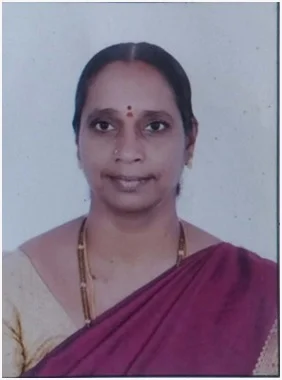

Prof. Rekha Redamalla, currently serving as Professor of Computer Science and Informatics; Principal at University College of Engineering and Technology; and Dean - Faculty of Engineering and Technology, is having 25 Years of teaching Experience and 16 Years of Research Experience. Received her MCA from Sri Padmavathi Mahila Vishawa Vidhyalayam- Tirupathi; M.Tech–Computer Science from JNTUH–(Campus) Hyderabad; Ph.D from University of Udine–Italy. She has been appointed as Associate Professor in April 2012 at Mahatma Gandhi University and has been promoted as Professor in the Year 2022. She has published twenty one research papers at International/National Journals/Conferences including Springer, Elsevier, Cambridge Univ. Press, UGC Care etc. She worked as Head of the Department of Computer Science and Engineering for about 10 years and was Principal in the year 2011, at Bhoj Reddy Engineering College for Women, Hyderabad. Since 2012, She served the University and held several Academic and Administrative positions including- Principal at University College of Engineering and Technology-MGU, since March 2022 to till date Dean, Faculty of Engineering and Technology -MGU, since Jan 2023 to till date. Chairperson- Board of Studies for Computer Science –MGU, since Jul 2018 to till date. Head of the Department of Computer Science and Informatics- UCET-MGU from Oct 2016 to Oct 2018. Founder Principal at University College of Engineering and Technology-MGU, from Oct 2013 to Oct 2015. Head of the Department of Computer Science and Informatics- UCET-MGU from May 2013 to June 2014. Principal at University College of Science and Informatics -MGU, from Jun 2012 to Oct 2013. Currently serving the University as Chairperson, BOS for Computer Science allied branches. She is serving as member of BOS, academic Counsels and Governing bodies of several autonomous and non- autonomous colleges of MGU. She is serving as member of BOS at Telangana Mahila Visawa Vidhyalayam, Hyd. She is life Member of Indian Society for Technical Education (LMISTE), received B N Sastry Memorial personal Talent award for the Year 2006 and she is recognised as “NPTEL DISPLINE STAR” for Dec 2020 by NPTEL- Swayam. One Research Scholar awarded Ph.D. in CSE under her guidance and another three Ph.D. Research Scholars are working under her guidance. Area of Specialization: Semantics of OOL; Computer Networks